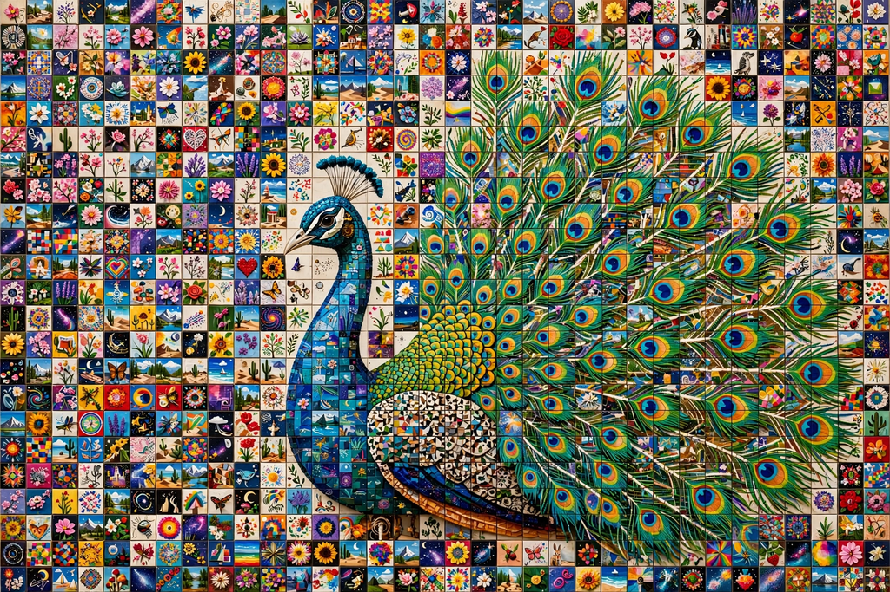

Beeple
Mike Winkelmann (born 1981), known as Beeple, is an American digital artist, graphic designer and animator. He became internationally famous in March 2021 when his non-fungible token (NFT) artwork Everydays: The First 5000 Days sold at Christie's for $69.3 million, then the third-highest auction price for a work by a living artist and a landmark for the NFT market.

| Beeple | |
|---|---|
| Born | Mike Winkelmann, 1981, Fond du Lac, Wisconsin, US |
| Known for | Digital art, NFTs, Everydays series |
| Notable work | Everydays: The First 5000 Days (2021) |
| Movement | Post-Internet, digital art |
Everydays
In May 2007 Winkelmann began the Everydays project: creating and posting one digital artwork every day, without interruption, using tools such as Cinema 4D. The images mix dystopian science fiction, pop culture and grotesque political satire. The first 5,000 daily images were composited into a single collage JPEG and minted as an NFT, which Christie's offered in a standalone online sale in February–March 2021. The buyer was the crypto investor Vignesh Sundaresan, known as MetaKovan.
Career and later work
Before the sale, Beeple was known in motion-design and concert-visual circles, producing free Creative Commons "VJ loops" and visuals for performers including Justin Bieber and Katy Perry, and collaborations with brands such as Louis Vuitton. His later works, including the kinetic sculpture Human One (2021), which sold at Christie's for $28.9 million, combine physical objects with updatable digital imagery. He established a studio and exhibition space in Charleston, South Carolina. The collapse of the NFT market after 2022 made Beeple's $69 million sale a symbol both of crypto-era exuberance and of digital art's arrival in the mainstream auction world.
See also
Recreated from memory as part of the muse-webcrawl project.